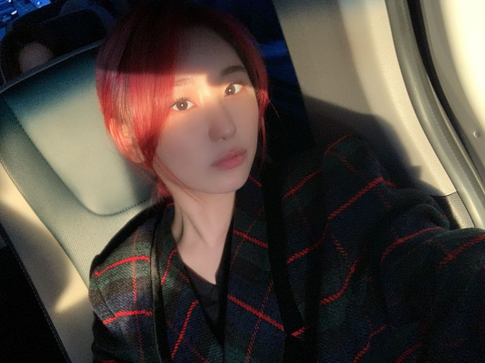

날씨가 많이 추워졌어요
그죵..
따뜻하게 입구
아프지 말아요 ㅎㅎ
요즘 정신이 너무 없네요...
그래도 열심히 살고 있는 거니까 !!
으쌰으쌰 하고 있다는 거🙈
멋진 일이야

욕심..
욕심이라는 거
참 내고 싶지만.. 내가 좋은 쪽으로 욕심을
내는 게 맞을까 의문이 들어서 계속
스스로 질문을 하는 것 같아요
그러다가 시간 초과해버리구
후회하기도 하고 ..
욕심
이라는 단어는... 정의가 뭘까ㅋㅋㅋㅋㅋㅋㅋㅋㅋㅋㅋ
이기적 = 욕심?
자기발전 = 욕심?
저는 오늘 참 이상한 주제에 꽃혀서
고민하네요 ㅎㅎ
위즈원 굿나잇 입니다🌼
이러고 말겠죠 저는ㅋㅋㅋㅋㅋㅋㅋㅋ🌝
좋은 인생 멋진 인생 사는 법
쿨해지는 법 알려주실 분😎?